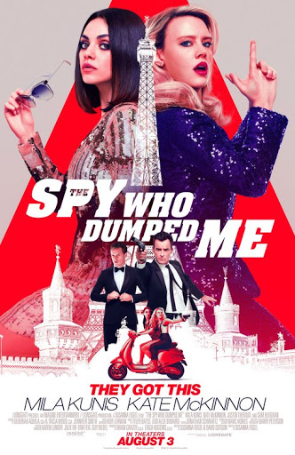

코미디
; 웃음을 주조로 하여 인간과 사회의 문제점을 경쾌하고 흥미 있게 다룬 연극이나 극 형식.나를 차버린 스파이 (The Spy Who Dumped Me, 2018)

- 개봉일 : 2018.08.22
- 감독 : 수잔나 포겔
- 각본 : 수잔나 포겔, 데이비드 아이서슨
- 출연 : 밀라 쿠니스, 케이트 맥키넌, 샘 휴건, 저스틴 서룩스, 질리언 앤더슨, 프레드 멜리메드, 이바나 사크노
- 줄거리 : 생일날 문자 이별 통보도 모자라 엿 같은 미션을 남기고 떠난 CIA 구남친 덕에 '오드리'와 절친 '모건'은 국제적인 범죄에 연루된다. 얼떨결에 스파이가 되어버린 이들이 유럽 전역을 누비는 가운데, 정체를 알 수 없는 영국 요원들이 접근하고 최정예 킬러까지 따라붙으며 두 절친의 입담과 액션이 터지기 시작한다.
나의 감상평 : 말해 뭐해!!!! 케이트 맥키넌과 밀라 쿠니스 연기 조합 너무 좋고, 영화 내용도 너무 유쾌하다! 친한 친구랑 편한 옷 입고 치킨 먹으면서 깔깔거리면서 보고 싶은 영화다. 제발 봐주세요!!